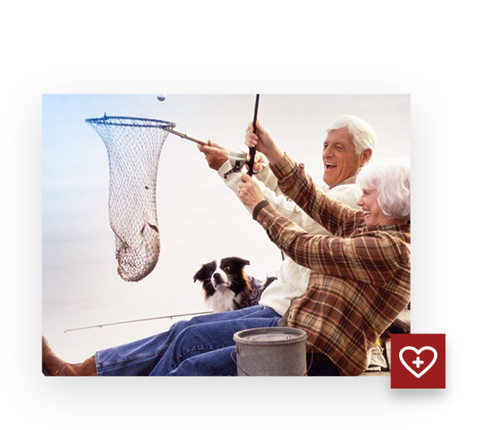

Czy wiesz, że...

...średnia długość życia Francuzów jest wyjątkowa na tle Europy Zachodniej, mimo ich teoretycznie niezbyt zdrowej diety i picia dużej ilości alkoholu. Alkohol ten jest jednak spożywany głównie w formie czerwonego wina zrobionego z winogron, który jest głównym źródłem resweratrolu.
Skład
| składnik | zawartość w 1 kaps. | % zds* |
|---|---|---|
| Ekstrakt z aksamitka wzniesionego (Tagetes erecta),w tym: Luteina Zeaksantyna |
50mg 10mg 2mg |
** |
| Ekstrakt z borówki czernicy (Vaccinium myrtillus),w tym: Antocyjany |
50mg 12,5mg |
** |
| Witamina C | 30mg | 37,5 |
| Ekstrakt z czerwonego wina (Vitis vinifera), w tym: Resweratrol |
17mg 5,1mg |
** |
| Cynk | 10mg | 100 |
| Witamina E | 8,1 mg eqv. alfa-tokoferolu | 67,5 |
| Witamina B2 | 1,4mg | 100 |
| Witamina A | 400 µg eqv. retinolu | 50 |
| Chrome | 420 µg | 50 |
* ZDS - Zalecane Dzienne Spożycie
** brak ustalonej normy Zalecanego Dziennego Spożycia